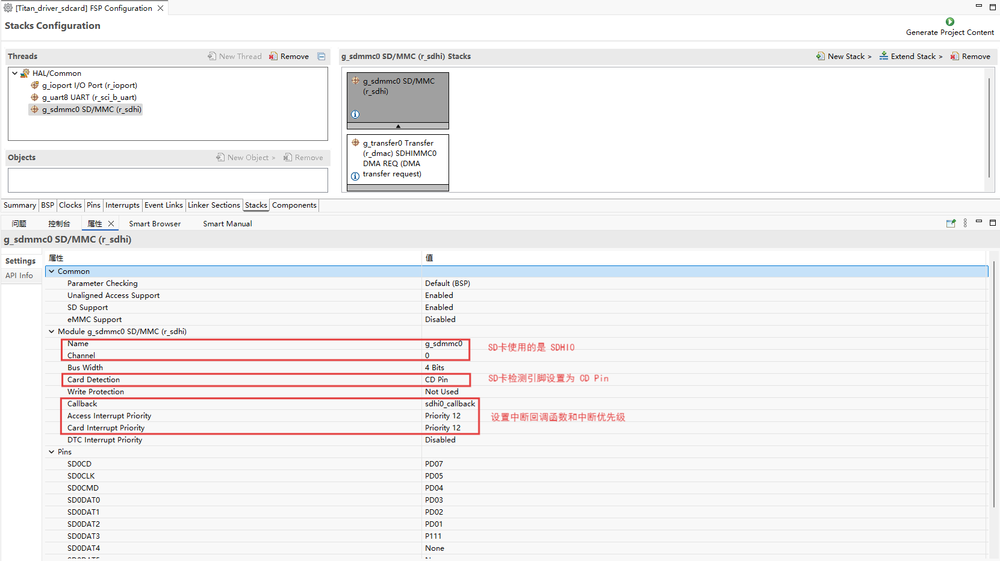
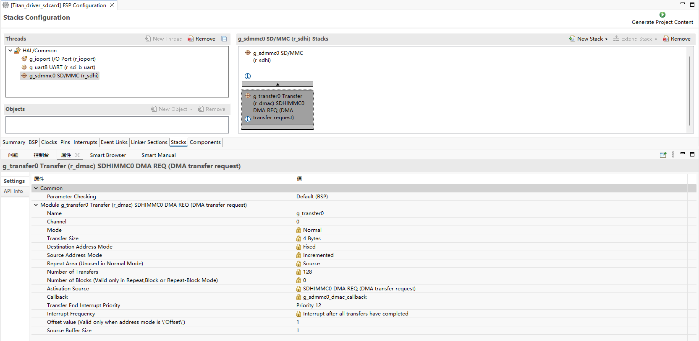
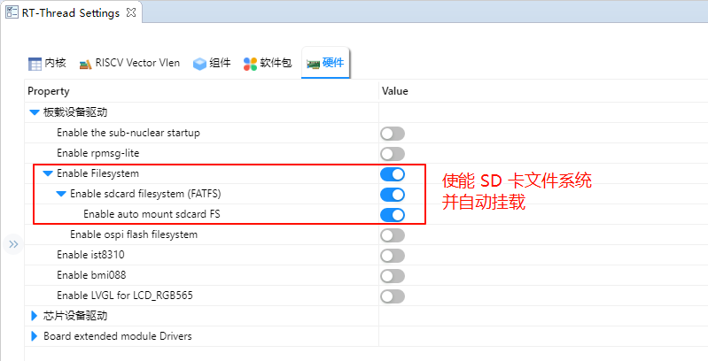

SD卡文件系统示例说明
简介
本例程使用 SD 卡作为文件系统的存储设备，展示如何在 SD 卡上创建文件系统（格式化卡），并挂载文件系统到 RT-Thread 操作系统中。
文件系统挂载成功后，展示如何使用文件系统提供的功能对目录和文件进行操作。
SD 卡简介
1. 概述
SD 卡（Secure Digital Card） 是一种小型、便携的非易失性存储设备，广泛用于 嵌入式系统、相机、手机、数据记录仪 等场景。
SD 卡由 控制器 + NAND Flash 存储芯片 组成，外部通过标准接口与主机通信。
主要特点：
小巧轻便，体积通常为 32 × 24 × 2.1 mm（标准卡）
采用 非易失性闪存（NAND Flash） 存储数据
支持热插拔和掉电保护
2. SD 卡类型
按尺寸分类
标准 SD 卡（Standard SD）：32 × 24 mm
Mini SD：21.5 × 20 mm
Micro SD（TF 卡）：15 × 11 mm，最常用
按容量分类
类型
容量范围
SDSC
1 MB ~ 2 GB
SDHC
4 GB ~ 32 GB
SDXC
32 GB ~ 2 TB
SDUC
2 TB ~ 128 TB
按速度等级
Class 2/4/6/10：最低写入速度分别为 2、4、6、10 MB/s
UHS（Ultra High Speed）：UHS-I/UHS-II/UHS-III，速率可达 312 MB/s
Video Speed Class（V6/V10/V30/V60/V90）：适用于高清视频录制
3. SD 卡接口
SPI 模式
使用 SPI 总线（MISO, MOSI, SCK, CS）
简单易用，适合 MCU
数据传输速率较低
SD 模式（1-bit / 4-bit）
使用专用 SD 总线
支持 1-bit 或 4-bit 数据线
速率高于 SPI 模式
UHS 模式
支持高速数据传输，常用于摄像机和高性能嵌入式应用
4. 工作原理
命令/数据传输
主机通过 SD 卡协议发送命令（CMD）
卡片返回响应（R1, R2 等）
读写数据块（Block），每块通常为 512 Byte
控制器管理
内部控制器负责 坏块管理、错误纠正（ECC）、逻辑到物理地址映射
外部主机无需直接管理 NAND Flash 特性
数据存储
数据存储在 NAND Flash 中
支持多次擦写和擦写寿命管理（典型寿命 10 万次擦写）
5. SD 卡性能指标
参数 |
描述 |
|---|---|
容量 |
1 GB ~ 128 TB |
数据块大小 |
512 Byte（标准） |
接口速率 |
SPI/SD 1-bit/4-bit/UHS |
最大传输速度 |
25 MB/s（标准），312 MB/s（UHS-III） |
工作电压 |
3.3 V（部分 Micro SD 支持 1.8 V） |
工作温度 |
-25 ℃ ~ 85 ℃（工业级） |
耐用性 |
擦写次数 10^4 ~ 10^5 |
6. SD 卡应用场景
消费电子
手机、平板、数码相机、摄像机存储
嵌入式系统
MCU/FPGA 数据存储
日志记录、配置文件保存
工业应用
工业控制器、数据采集系统
高温环境工业级 SD 卡可使用
音视频应用
高速视频录制（UHS/V Class）
汽车电子
行车记录仪、导航系统数据存储
RA8 系列 SDHI 模块概述
RA8 系列 MCU 内置高性能 SDHI 模块，专门用于与 SD/SDHC/SDXC 卡高速通信，支持 SPI 模式和 SD/SDIO 模式。
1. 总体特性
支持 SD 标准
SD v1.x / v2.x / SDHC / SDXC
支持 SPI 模式和 SD/MMC 模式
高速数据传输
最高可达 50 MHz SDCLK（具体取决于 MCU 时钟配置）
支持 1-bit/4-bit 数据总线
自动命令和数据传输
支持 DMA 传输模式，减少 CPU 占用
自动命令序列生成（CMD0~CMD59）
错误检测
CRC7 校验命令，CRC16 校验数据
超时检测，响应错误识别
中断支持
卡插拔检测中断
命令完成中断
数据传输完成中断
错误中断
2. SDHI 模块架构
RA8 SDHI 模块主要包含以下子模块：
命令控制单元（Command Control Unit）
负责发送 SD 命令（CMD0~CMD59）
处理命令响应（R1、R2、R3、R7 等）
支持命令超时检测和 CRC 校验
数据传输单元（Data Transfer Unit）
通过内部 FIFO 或 DMA 实现数据收发
支持块读/写，最大 512 字节块
支持单块/多块传输模式
时钟与总线控制
SDCLK 生成和分频
1-bit 或 4-bit 总线切换
可配置高/低电平保持时间
卡检测与电源控制
检测 SD 卡插入/拔出状态
可控制卡片电源开关（如支持）
中断与事件控制单元
命令完成中断
数据传输完成中断
错误中断
卡插拔中断
3. SDHI 工作原理
初始化阶段
检测 SD 卡插入
发送 CMD0、CMD8 初始化卡
查询卡容量与版本信息
命令发送
Host 向卡发送命令
Card 返回响应，SDHI 模块验证 CRC 并触发中断
数据传输
读/写数据块时，通过 FIFO 或 DMA 进行高速传输
支持单块或多块操作
错误处理
超时、CRC 错误、响应错误等
SDHI 模块可触发错误中断，由驱动进行重试或异常处理
FSP 配置
新建 stacks 选择 r_sdhi 并配置 sdhi0 配置信息如下：


RT-Thread Settings 配置
在配置中使能 SD 卡文件系统。

使能 SDHI0 并将 SDHI0 的 Bus Width 设置为 1。

示例工程说明
本例程的文件系统初始化可参考下方代码示例（可放入 board 层或应用初始化文件中）：
#include <rtthread.h>
#if defined(BSP_USING_FILESYSTEM)
#include <dfs_romfs.h>
#include <dfs_fs.h>
#include <dfs_file.h>
#if DFS_FILESYSTEMS_MAX < 4
#error "Please define DFS_FILESYSTEMS_MAX more than 4"
#endif
#if DFS_FILESYSTEM_TYPES_MAX < 4
#error "Please define DFS_FILESYSTEM_TYPES_MAX more than 4"
#endif
#define DBG_TAG "app.filesystem"
#define DBG_LVL DBG_INFO
#include <rtdbg.h>
#ifdef BSP_USING_FS_AUTO_MOUNT
#ifdef BSP_USING_SDCARD_FATFS
static int onboard_sdcard_mount(void)
{
if (dfs_mount("sd", "/sdcard", "elm", 0, 0) == RT_EOK)
{
LOG_I("SD card mount to '/sdcard'");
}
else
{
LOG_E("SD card mount to '/sdcard' failed!");
rt_pin_write(0x000D, PIN_LOW);
}
return RT_EOK;
}
#endif /* BSP_USING_SDCARD_FATFS */
#endif /* BSP_USING_FS_AUTO_MOUNT */
#ifdef BSP_USING_FLASH_FS_AUTO_MOUNT
#ifdef BSP_USING_FLASH_FATFS
#define FS_PARTITION_NAME "filesystem"
static int onboard_fal_mount(void)
{
/* 初始化 fal 功能 */
extern int fal_init(void);
extern struct rt_device* fal_mtd_nor_device_create(const char *parition_name);
fal_init ();
/* 在 ospi flash 中名为 "filesystem" 的分区上创建一个块设备 */
struct rt_device *mtd_dev = fal_mtd_nor_device_create (FS_PARTITION_NAME);
if (mtd_dev == NULL)
{
LOG_E("Can't create a mtd device on '%s' partition.", FS_PARTITION_NAME);
return -RT_ERROR;
}
else
{
LOG_D("Create a mtd device on the %s partition of flash successful.", FS_PARTITION_NAME);
}
/* 挂载 ospi flash 中名为 "filesystem" 的分区上的文件系统 */
if (dfs_mount (FS_PARTITION_NAME, "/fal", "lfs", 0, 0) == 0)
{
LOG_I("Filesystem initialized!");
}
else
{
dfs_mkfs ("lfs", FS_PARTITION_NAME);
if (dfs_mount ("filesystem", "/fal", "lfs", 0, 0) == 0)
{
LOG_I("Filesystem initialized!");
}
else
{
LOG_E("Failed to initialize filesystem!");
rt_pin_write(0x000D, PIN_LOW);
}
}
return RT_EOK;
}
#endif /*BSP_USING_FLASH_FATFS*/
#endif /*BSP_USING_FLASH_FS_AUTO_MOUNT*/
const struct romfs_dirent _romfs_root[] =
{
#ifdef BSP_USING_SDCARD_FATFS
{ROMFS_DIRENT_DIR, "sdcard", RT_NULL, 0},
#endif
#ifdef BSP_USING_FLASH_FATFS
{ ROMFS_DIRENT_DIR, "fal", RT_NULL, 0 },
#endif
};
const struct romfs_dirent romfs_root =
{
ROMFS_DIRENT_DIR, "/", (rt_uint8_t*) _romfs_root, sizeof(_romfs_root) / sizeof(_romfs_root[0])
};
static int filesystem_mount(void)
{
#ifdef RT_USING_DFS_ROMFS
if (dfs_mount(RT_NULL, "/", "rom", 0, &(romfs_root)) != 0)
{
LOG_E("rom mount to '/' failed!");
}
/* 确保块设备注册成功之后再挂载文件系统 */
rt_thread_delay(500);
#endif
#ifdef BSP_USING_FS_AUTO_MOUNT
onboard_sdcard_mount();
#endif /* BSP_USING_FS_AUTO_MOUNT */
#ifdef BSP_USING_FLASH_FS_AUTO_MOUNT
onboard_fal_mount ();
#endif
return RT_EOK;
}
INIT_COMPONENT_EXPORT(filesystem_mount);
#endif /* defined(BSP_USING_FILESYSTEM)*/
编译&下载
RT-Thread Studio：在RT-Thread Studio 的包管理器中下载 Titan Board 资源包，然后创建新工程，执行编译。
编译完成后，将开发板的 USB-DBG 接口与PC 机连接，然后将固件下载至开发板。
运行效果
按下复位按键重启开发板，等待 SD 挂载后进入 SD 卡文件系统目录查看 SD 卡上的文件。